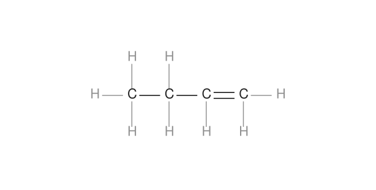
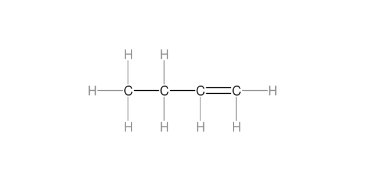
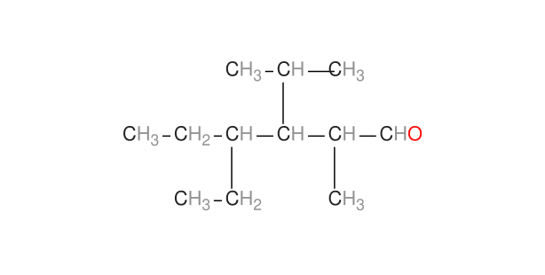
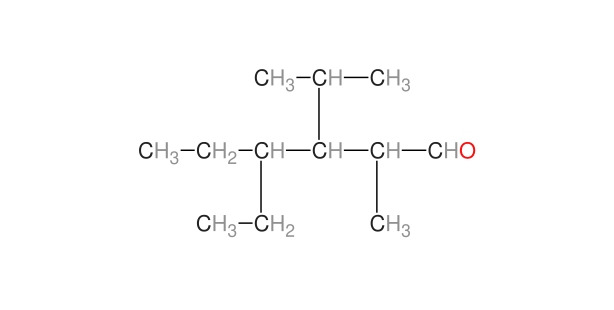
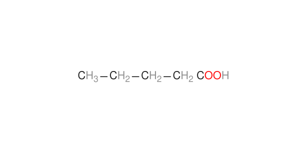
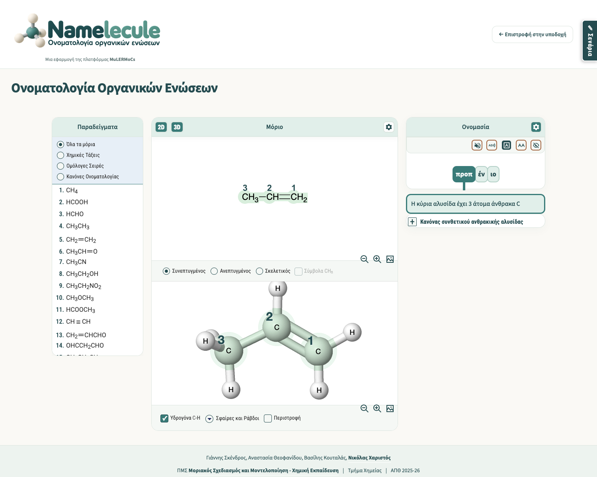

Διόρθωση γραμμάτων 2D
31 Οκτωβρίου 2026 · Κύρια έκδοση Namelecule · Τοπική ενσωμάτωση
Η ενσωμάτωση και ο ανεξάρτητος τελικός έλεγχος ολοκληρώθηκαν χωρίς ευρήματα. Η αλλαγή είναι τοπική και δεν έχει δημοσιευτεί.
Η σχεδίαση μετρά τα πραγματικά γράμματα και τους δείκτες τους. Κάθε λευκή περιοχή συνδέεται ρητά με το άτομό της. Έτσι διατηρείται καθαρό κενό από τους δεσμούς, χωρίς υπερβολικές περιοχές που κρύβουν συνδέσεις. Η ίδια διαδρομή χρησιμοποιείται στην ελεύθερη εξερεύνηση και στα μαθήματα.
Καθαρό κενό ανάμεσα στους δεσμούς και τα γράμματα
1-βουτένιο · Οι πραγματικές διαστάσεις των χαρακτήρων καθορίζουν την προστατευμένη περιοχή τους.
Πριν
Pixels επαφής ≤0,5 CSS px: 162 · Πλήρως κρυμμένες γραμμές: 0
Μετά
Pixels επαφής ≤0,5 CSS px: 0 · Πλήρως κρυμμένες γραμμές: 0
Κάθε προστατευτική περιοχή ανήκει στο σωστό άτομο
4-αιθυλο-3-ισοπροπυλο-2-μεθυλοεξανάλη · Η σύμπτυξη του CHO διατηρεί πλέον την περιοχή του γειτονικού CH₃.
Πριν
Pixels επαφής ≤0,5 CSS px: 97 · Πλήρως κρυμμένες γραμμές: 0
Μετά
Pixels επαφής ≤0,5 CSS px: 0 · Πλήρως κρυμμένες γραμμές: 0
Προστασία γραμμάτων χωρίς εξαφάνιση δεσμού
πεντανικό οξύ · Περιορίζεται η υπερβολική κάλυψη δίπλα στο COOH, ώστε να φαίνεται ο τελευταίος C–C.
Πριν
Pixels επαφής ≤0,5 CSS px: 0 · Πλήρως κρυμμένες γραμμές: 1
ΜετάPixels επαφής ≤0,5 CSS px: 0 · Πλήρως κρυμμένες γραμμές: 0
Τι ελέγχθηκε
| Πεδίο | Πραγματική κάλυψη |
|---|
| Βιβλιοθήκη | 141 μόρια, 422 διαθέσιμες μορφές × 2 πλάτη = 844 περιπτώσεις. Καμία επαφή ≤0,5 CSS px, κρυμμένη γραμμή, περικοπή ή σφάλμα JavaScript. |
| Διατήρηση δεδομένων | Ίδια ονόματα, κείμενα ετικετών, σύμβολα και γράφοι. Core, MOL/SDF, σενάρια JSON, React και αρχικό JSME αμετάβλητα. |
| Χειριστήρια | 98 καταστάσεις zoom/επισήμανσης/αρίθμησης/απόκρυψης. 48 έλεγχοι διατήρησης αναλογιών αλκανίων. Πραγματικές εξαγωγές PNG 2D και 3D. |
| Παραγωγός JSME | 92 περιπτώσεις σε 4 μεγέθη γραμμάτων, με διατήρηση atom IDs, φορτίων, ισοτόπων, δεσμών, σχετικών συντεταγμένων και MOL body. |
| Μαθήματα | 14 είσοδοι, 70 επιλεγμένες καταστάσεις, 14 τελικά μοντέλα 3D και 14 έξοδοι. Δεν εκτελέστηκαν και τα 337 βήματα. |
| Γραμματοσειρές και ανάκαμψη | Πραγματικό late FontFace, εναλλακτική μέτρηση, ασφαλής αποτυχία/ανάκτηση, διατήρηση προοδευτικής αρίθμησης και καμία κλήση 3D από την ανανέωση γραμμάτων. |
| Δεύτερη μηχανή browser | 28 αντιπροσωπευτικές περιπτώσεις σε native WKWebView, χωρίς επαφές/κρυμμένες γραμμές/περικοπή/JS errors. Έλεγχος WebKit, όχι πιστοποίηση της εφαρμογής Safari. |
| Νέα δεδομένα | 18 συνθετικές περιπτώσεις περιστροφής/απόστασης: 12 εμφανίστηκαν σωστά, 6 ακραία συνωστισμένες απορρίφθηκαν με ελεγχόμενο μήνυμα. |
Οι αρχικές δοκιμές εντόπισαν υπερβολική κάλυψη στο ελάχιστο zoom και κλήση αρίθμησης 3D μετά από έξοδο μαθήματος. Διορθώθηκαν πριν από τον τελικό έλεγχο. Διορθώθηκε επίσης ασύγχρονο σφάλμα του εργαλείου μέτρησης· τα αρχικά διαγνωστικά δεν χρησιμοποιούνται ως τελική απόδειξη.

Όρια και επαναφορά
Τα αποτελέσματα αφορούν την υπάρχουσα βιβλιοθήκη και τις καταγεγραμμένες δοκιμές. Δεν αποτελούν εγγύηση για κάθε μελλοντική γεωμετρία, γραμματοσειρά ή λειτουργικό σύστημα. Ο έλεγχος μελλοντικών προσθηκών είναι διαθέσιμος στο tools/check-2d-labels.py. Σε αποτυχία μέτρησης καθαρίζεται το παλιό διάγραμμα και εμφανίζεται μήνυμα, ώστε να μην εξάγεται παραπλανητικό PNG.
Ο WebKit και οι συνηθισμένοι έλεγχοι χειριστηρίων προηγήθηκαν της τελικής διόρθωσης του callback γραμματοσειρών. Το callback ελέγχθηκε στοχευμένα και όλος ο κατάλογος επανελέγχθηκε στον τελικό κώδικα. Δεν ελέγχθηκαν Chrome/Windows, πλήρες BFCache ή κάθε βήμα/μοντέλο 3D. Το offline πακέτο παραμένει για αργότερα.
Υπάρχει ελεγχόμενη επιλεκτική επαναφορά, με προστασία νεότερων αλλαγών. Δοκιμάστηκε σε απομονωμένο αντίγραφο· η εφαρμογή δεν επανήλθε στην προηγούμενη έκδοση. Καμία αλλαγή core σήμερα, κανένα commit ή δημοσίευση.
Ανεξάρτητος έλεγχος · Σύνοψη ελέγχων · Σύγκριση δεδομένων · Προέλευση οπτικών παραδειγμάτων · Αρχεία επιλεκτικής επαναφοράς
Άνοιγμα Namelecule · Βιβλιοθήκη θεωρίας